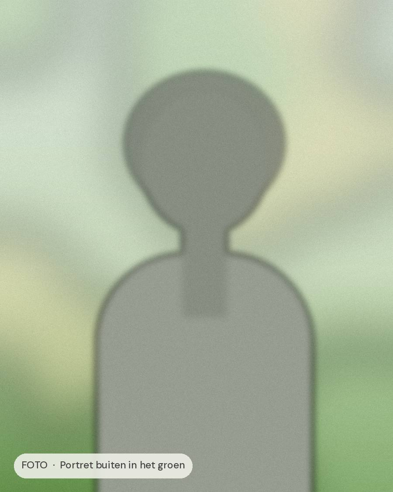
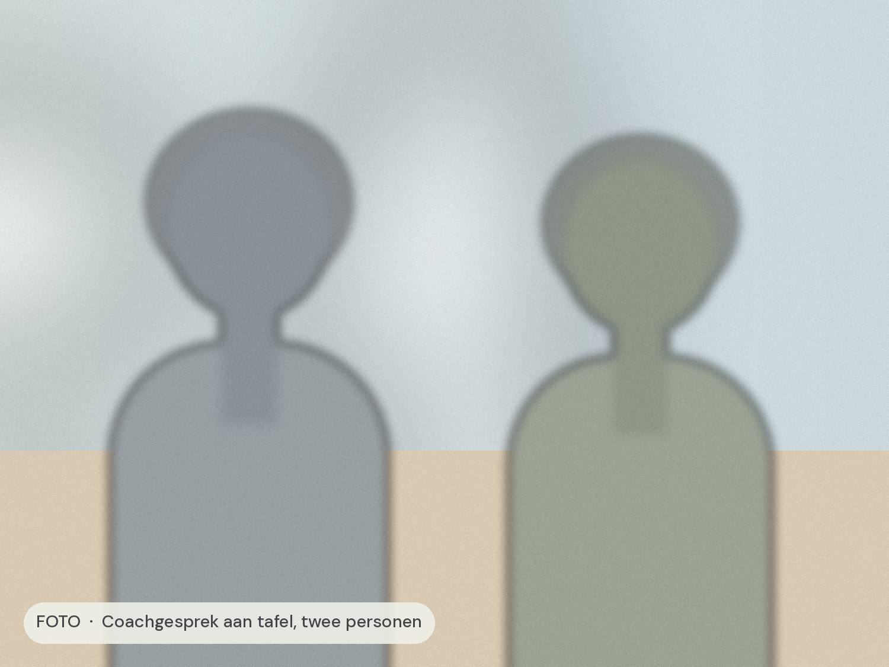
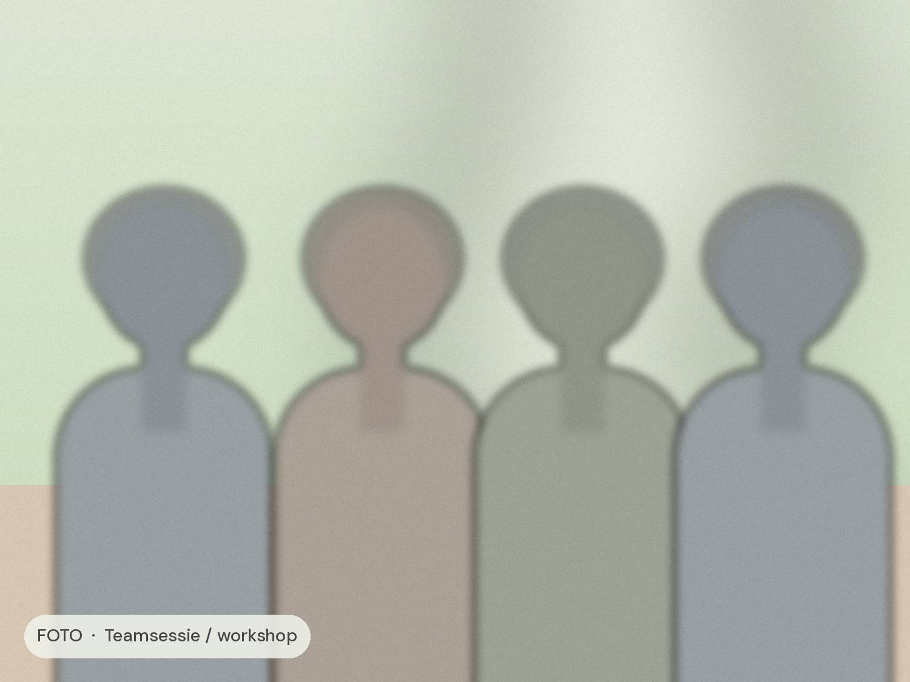
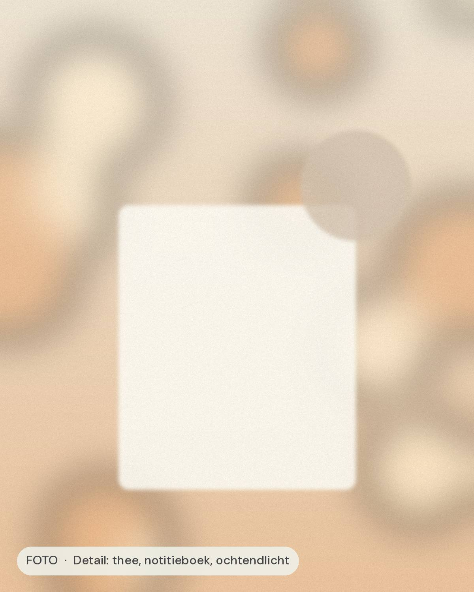

Vitaliteit is geen extra taak op je lijst. Het is de basis waar goed leiderschap op rust.

Maak kennis
Hoi, fijn dat je er bent
Ik ben [Naam], coach en oprichter van Vink Vitaal. Ik help leidinggevenden om weer in contact te komen met wat hen energie geeft, zodat ze met rust en overtuiging kunnen leiden.
Mijn aanpak is persoonlijk en praktisch: wat we bespreken, kun je de volgende dag toepassen.
Hoe ik je kan helpen

1-op-1 coaching
Een persoonlijk traject rond jouw vragen over energie, grenzen en leiderschap.

Vitaal Leiderschap
Het groepsprogramma waarin je samen met andere leiders bouwt aan duurzame energie.

Workshops voor teams
Praktische sessies over vitaliteit en werkplezier, op locatie of online.
Werkwijze
Stap voor stap, in jouw tempo
Geen standaardprogramma, wel een duidelijke route. Elke stap bouwt voort op de vorige, zodat veranderingen blijven hangen.
Kennismaken
Een open gesprek over waar je staat en wat je zoekt.
Inzicht
We brengen in kaart wat je energie geeft en wat het kost.
Traject
Coaching en oefeningen die passen bij jouw dagelijkse praktijk.
Borgen
Je verankert nieuwe gewoontes, zodat ze blijven werken.
Veelgestelde vragen
Goed om te weten
Voor wie is coaching bij Vink Vitaal?
Voor leidinggevenden, ondernemers en professionals met verantwoordelijkheid die merken dat hun energie of plezier onder druk staat.
Hoe lang duurt een traject?
De meeste trajecten duren drie tot zes maanden. In het kennismakingsgesprek kijken we wat bij jou past.
Kan mijn werkgever het traject betalen?
Vaak wel. Coaching valt regelmatig onder het opleidings- of vitaliteitsbudget. Ik denk graag mee over een voorstel.
Werk je online of op locatie?
Allebei. Veel klanten kiezen voor een mix, en een wandelcoachsessie in de natuur is ook mogelijk.
Klaar om te beginnen?
Plan een kennismaking en ontdek wat coaching voor jou kan betekenen.
Gratis en vrijblijvend · 30 minuten